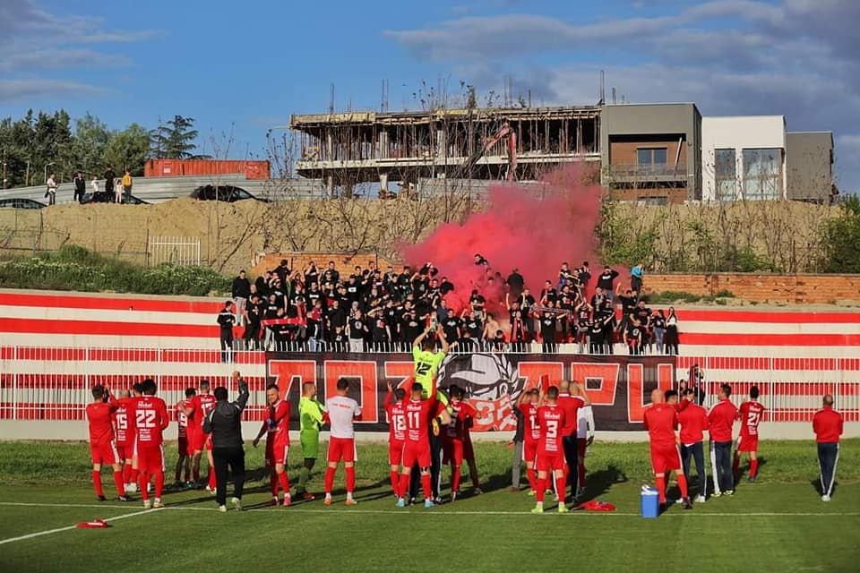

Последно одиграни натпревари:
ГФК Тиквеш е единствениот фудбалски клуб во град Кавадарци и истиот е основан
во 1930 година и важи за еден од најстарите фудбалски клубови во Република Македонија.Тој се наоѓа во истоимениот град Кавадарци.
Со посветеноста на играчите, тренерот, поддршката од навивачите
а се разбира и од навивачката група Лозари, во 2021 година тимот успеа да
се пласира во Првата Македонска Фудбалска Лига. Традиционалните бои на клубот се
црвената и белата.
Жителите на град Кавадарци се љубители на фудбалот и спортот,
па така секој викенд кога во нашиот град има натпревар, трибините на градскиот
стадион Тиквеш, се постојано полни.